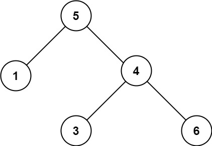

98. 验证二叉搜索树
中序遍历维护 prev：合法 BST 的中序序列必须严格递增，当前值不严格大于 prev 就返回 false。
思路
- 递归顺序就是中序「左 → 根 → 右」：先走左子树，再比较当前值，最后走右子树。
prev用long且初始为Long.MIN_VALUE：比任何 int 都小，单结点值是Integer.MIN_VALUE也不会误判。- 当前值必须严格大于 prev（BST 不允许重复）；比较通过后把 prev 更新成当前值。
- 左子树失败或当前比较失败都直接返回 false，不再往下走。
图解
最优解
1class Solution {2 // 中序遍历里上一个访问到的值，取 long 最小值比任何 int 都小3 private long prev = Long.MIN_VALUE;4 5 public boolean isValidBST(TreeNode root) {6 if (root == null) return true;7 // 左子树不合法，整棵树直接失败8 if (!isValidBST(root.left)) return false;9 // 中序位置：当前值必须严格大于上一个值10 if (root.val <= prev) return false;11 prev = root.val;12 return isValidBST(root.right);13 }14}题目
给你一个二叉树的根节点 root ，判断其是否是一个有效的二叉搜索树。
有效 二叉搜索树定义如下：
- 节点的左子树只包含 严格小于 当前节点的数。
- 节点的右子树只包含 严格大于 当前节点的数。
- 所有左子树和右子树自身必须也是二叉搜索树。
示例 1：

输入：root = [2,1,3] 输出：true
示例 2：

输入：root = [5,1,4,null,null,3,6] 输出：false 解释：根节点的值是 5 ，但是右子节点的值是 4 。
提示：
- 树中节点数目范围在
[1, 104]内 -231 <= Node.val <= 231 - 1
题面取自力扣当前版本。
数据快照 2026-11-04。题面版权归力扣所有，本站点仅供本人学习使用，请勿对外发布。